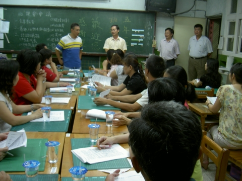
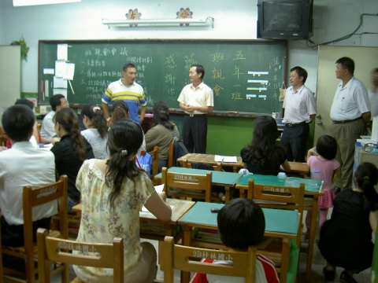

資源運用
資源運用
|
|
高雄市小港區桂林國小學年度第一學期五年一班班級家長會
會議流程
一、主席報告﹕(由與會家長推舉一人擔任會議的主席)
二、導師報告﹕
感謝各位家長熱情的參與。有了你們的支持及協助，才能讓我的教學無後顧之憂。經過了溝通及意見交換，才能讓我們的孩子有更好的學習環境。
新學年的到來，首先恭喜您的寶貝，升上了五年級。新學期、新氣象、新的學習領域、新的同學、新的老師，相信寶貝的心情也是新的。為了便於溝通，讓親師合作來幫助寶貝的成長、茁壯，個人將敬請您配合的事項與教育的觀念，再做一說明：
〈一〉教育觀念的溝通
1.為避免干擾到孩子們的學習，煩請您叮囑孩子，不要攜帶玩具或電動玩具到校。若有發現者，則先暫予保管，放學後再攜回，並通知貴家長。
2.個人的教育理念是多鼓勵、少斥責，尊重孩子但絕不放縱。而為了增進孩子們的學習，並維持必要的學習秩序，我將給予孩子們適當的管教與必要的督導。若孩子們表現優良，除了給予口頭獎勵之外，並在孩子們榮譽卡或聯絡簿上記錄，以做為日常生活表現成績之參考﹔若孩子們表現不良，除了通知貴家長外，並將給予適度的處罰，而情節重大且嚴重者，則送交學務處或通知貴家長到校。
3.家庭聯絡簿是您我合作教育的橋樑，煩請貴家長務必在百忙中抽空簽名。若有任何意見、想法或可供分享的，也請您多多記錄。
4.個人的聯絡電話是(07)8025368 手機：0921230889若您有任何寶貴意見，可以來電，個人將非常樂意傾聽您的意見與分享。另外也可以藉著網路來聯繫，
本班班級網頁網址：http://klps501.tw.class.urlifelinks.com/，
個人Email:xa7515@mail.klps.kh.edu.tw，也可以進行親師溝通。
〈二〉請貴家長配合的事項
1.勿做「快遞郵差」，不隨傳隨到，以養成寶貝自己做好自己的事之良好習慣。每日就寢前，務必要求寶貝準備好隔日的學用品。
2.「開水勝於任何飲料」，亦請不要給孩子們過多的零用錢，貴重物品亦不要攜帶到校，以避免遺失。
3.「多做多得，少做多失」，不用擔心寶貝會做不好，相信他們的能力。
〈三〉請貴家長協助的事項
請幫您的寶貝準備一個抽屜式整理箱，內放以下物品，置於教室內，以備寶貝之用：
|
□字典 |
□彩虹筆 |
□牙膏 |
□牙刷 |
|
□漱口杯 |
□抽取式面紙(午餐用) |
□抹布(勿太大塊) |
□彩色筆 |
|
□剪刀 |
□膠水 |
□美工刀 |
□切割墊 |
以上除部份物品外，煩請指導寶貝在所屬物品上標上名字，以防遺失。
最後有關各科的學習評量於附件中請參考，或至班網的班親簡訊欄查閱。
三、提案討論﹕
有關製作班服，經家長一致同意決定製作。
四、臨時動議﹕
有關晨光時間教學課程，由裕杰的媽媽、尚霖的媽媽負責，感謝兩位家長協助。
五、散會
|
活動照片 |
|
 |
 |